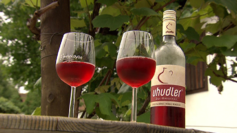

Vorspeisen
Burgenländische Käsekartoffeln
Gebratene Kartoffeln mit geschmolzenem Käse und Röstzwiebeln, perfekt als Vorspeise oder Beilage.

Gebratene Kartoffeln mit geschmolzenem Käse und Röstzwiebeln, perfekt als Vorspeise oder Beilage.
Ein traditionelles Gericht aus Gänsebraten, das in einer kräftigen Sauce mit Blaukraut serviert wird.
Zander aus dem Burgenland ist ein delikater Süßwasserfisch, der oft in den klaren Seen der Region gefangen und in der burgenländischen Küche zu köstlichen Gerichten wie gebratenem Zanderfilet oder Zander auf Gemüse zubereitet wird.
Feine Kipferl mit Nüssen, ein echtes Highlight der burgenländischen Backkunst.
Somlauer Nockerl sind eine ungarische Süßspeise, die auch im Burgenland sehr beliebt sind. Sie bestehend aus Schichten von Biskuitteig, Walnüssen, Rosinen und einer reichhaltigen Schokoladensauce, die mit Vanillecreme und Schlagsahne serviert wird.
Ein kräftiger, trockener Rotwein mit Aromen von dunklen Beeren und einer feinen Würze.

Ein besonderer Wein aus der Region, gewonnen aus Hybridreben, der mit seinem unverwechselbaren Aroma von Erdbeeren und Waldbeeren beeindruckt.
Ein klarer Schnaps aus Marillen, der für seine intensive Fruchtaromatik geschätzt wird.